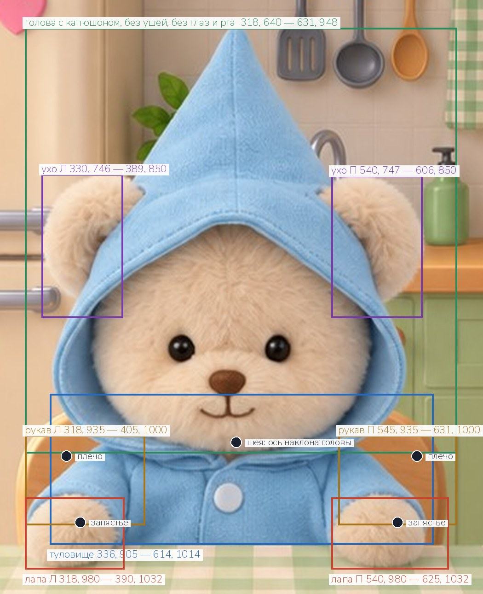
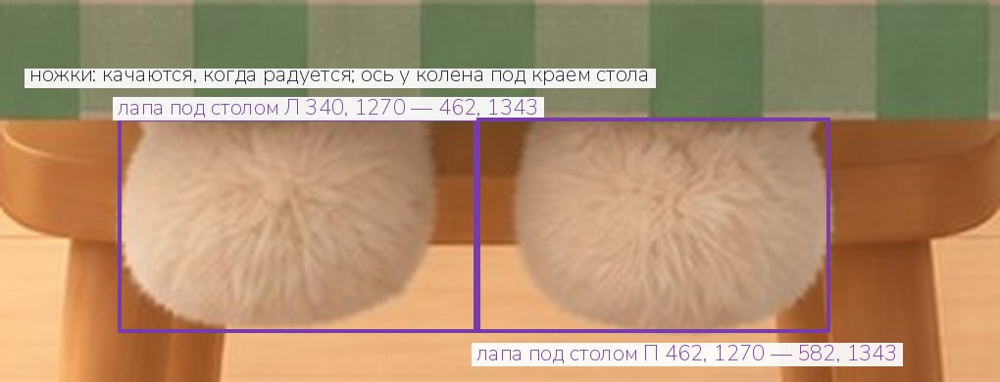

Мишка за столом должен дышать, моргать, водить глазами, подносить ложку ко рту, жевать и радоваться или грустить после еды. Для этого его фигура из плоской картинки кухни разбирается на части, и каждая часть двигается сама. Комната без мишки получена и принята. Ниже все обмеры и четыре шага: цельный мишка, части тела, глаза и рты, реквизит. Состав частей выбран по техническому заданию на анимацию (покой «голоден», действие «поесть», четыре эмоции; глаза и рот подменяются спрайтами) — чтобы второй раз к этой картинке не возвращаться.
Снизу вверх. Каждая часть — отдельный файл PNG на холсте 941 × 1672, с настоящей прозрачностью, стоит ровно на своём месте. Части перекрывают друг друга: там, где одна заходит под другую, она дорисована на 12–15 точек вглубь, чтобы при движении не открывалась дыра.
| Файл | Часть | Зачем двигается |
|---|---|---|
| — (принято) | комната без мишки | лежит |
| kitchen_foot_left.png kitchen_foot_right.png | ножки под столом, каждая отдельно | покачиваются, когда мишка радуется |
| kitchen_ear_left.png kitchen_ear_right.png | уши целиком, с корнем под капюшоном | сгибаются посередине |
| kitchen_torso.png | туловище в рубашке, от шеи до кромки стола | дышит, наклоняется к миске |
| kitchen_head.png | голова с капюшоном, без ушей, без глаз и рта | кивает, наклоняется, клюёт носом |
| kitchen_sleeve_left.png kitchen_sleeve_right.png | рукава от плеча до запястья | поворачиваются в плече: ложка ко рту, лапы вверх |
| kitchen_paw_left.png kitchen_paw_right.png | лапы на столе, от запястья | поворачиваются в запястье, держат ложку |
| kitchen_eyes_*.png, 5 файлов | оба глаза одним спрайтом | моргание, взгляд, эмоции |
| kitchen_mouth_*.png, 6 файлов | рот одним спрайтом | ест, жуёт, эмоции |
| kitchen_spoon.png kitchen_bowl.png | ложка и миска | реквизит действия «поесть» |
Итого 22 файла. Стол остаётся на фоне: лапы лежат поверх скатерти, а всё, что ниже кромки стола, в фигуру не входит.
| Что | Где |
|---|---|
| Холст каждого файла | 941 × 1672 |
| Фигура целиком (шаг 1) | 318, 640 — 631, 1034 |
| Кончик капюшона | 471, 640 |
| Голова с капюшоном | 318, 640 — 631, 948 |
| Ось наклона головы (шея) | 471, 940 |
| Левое ухо, с корнем | 330, 746 — 389, 850 |
| Правое ухо, с корнем | 540, 747 — 606, 850 |
| Линия сгиба уха | y ≈ 790 |
| Туловище | 336, 905 — 614, 1014 |
| Левый рукав · плечо · запястье | 318, 935 — 405, 1000 · 348, 950 · 358, 998 |
| Правый рукав · плечо · запястье | 545, 935 — 631, 1000 · 602, 950 · 588, 998 |
| Левая лапа на столе | 318, 980 — 390, 1032 |
| Правая лапа на столе | 540, 980 — 625, 1032 |
| Стол закрывает мишку от | y = 1014 |
| Ножки под столом, левая · правая | 340, 1270 — 462, 1343 · 462, 1270 — 582, 1343 |
| Левый глаз, центр · размер | 431, 872 · 19 × 19 |
| Правый глаз, центр · размер | 500, 872 · 18 × 19 |
| Спрайт глаз | 412, 855 — 518, 890 |
| Нос — остаётся на голове | 451–477 по ширине, 888–905 по высоте |
| Рот на исходнике | 445–483 по ширине, 907–922 по высоте |
| Спрайт рта | 436, 900 — 496, 934 |
Все числа — точки исходной картинки 941 × 1672, отсчёт от левого верхнего угла. На следующих страницах то же самое нарисовано.




Четыре шага, строго по очереди. Шаги 2 и 3 делаются из файла шага 1: если каждую часть генерировать отдельно, они не сойдутся в одного мишку.
kitchen_bear.pngИз исходной картинки кухни (941 × 1672, с мишкой) вырезать плюшевого мишку и положить на полностью прозрачный фон: капюшон, голова, оба уха, туловище, обе лапы на столе. Ниже кромки стола (y = 1014) остаются только лапы. Глаза открыты, рот закрыт, как на исходнике.
kitchen_bear.pngКаждая часть на том же холсте, на том же месте, что и в цельном
мишке. Наложив все части друг на друга в порядке таблицы выше, нужно
получить ровно kitchen_bear.png. Разница только в том, что у
каждой части дорисовано то, что на исходнике спрятано под соседней.
Спрайты кладутся на kitchen_head.png поверх ворса. Каждый
на том же холсте 941 × 1672, на своём месте, всё остальное прозрачное.
Это пришитые глаза-бусины и вышитый рот плюшевой игрушки: закрытые глаза
— дуги той же тёмной нитью, а не нарисованные веки. Первый глаз и первый
рот вырезаются из исходника без изменений, чтобы голова + eyes_open
+ mouth_neutral совпали с исходником точка в точку.
| Файл | Что в спрайте |
|---|---|
| kitchen_eyes_open.png | оба глаза как на исходнике, с бликами; зона 412, 855 — 518, 890 |
| kitchen_eyes_closed.png | закрыты спокойными дугами вниз (сон, моргание) |
| kitchen_eyes_happy.png | зажмурены счастливыми дугами вверх |
| kitchen_eyes_sad.png | полуприкрыты, взгляд вниз, внешние уголки опущены |
| kitchen_eyes_wide.png | удивление: раскрыты шире, крупнее обычных, блики ярче |
| kitchen_mouth_neutral.png | рот как на исходнике; зона 436, 900 — 496, 934 |
| kitchen_mouth_open.png | открыт, ждёт ложку, виден кончик языка |
| kitchen_mouth_chew.png | закрыт плотнее, губы сжаты, жуёт |
| kitchen_mouth_smile.png | широкая улыбка, виден язычок |
| kitchen_mouth_sad.png | уголки опущены |
| kitchen_mouth_o.png | маленький кружок «о» |
Взгляд влево, вправо и вниз отдельными файлами не нужен: глаза-бусины приложение сдвигает само. Сердечки, искры и слёзы тоже рисует приложение.
kitchen_spoon.png, kitchen_bowl.pngeyes_open + mouth_neutral совпадает
с исходником.